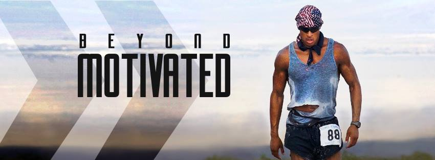

Introduction
I’ve been pondering on this a lot lately, after listening to the latest Naval on Tim Ferriss podcast where self-reflection was the main theme, so I decided to put together a list. Criteria to make the cut was plain and simple: the impact has to be significant and can be well attributed to the particular person. As I mentioned previously, the purpose of the compilation of this list is mainly self-reflection, but I decided to publish it just in case anyone else finds this useful. If you’re reading this post and you know me, do you think you can guess before going down the list?
Let’s see how you did!
Let’s see how you did!
Jordan Peterson
Easily the most controversial personality of this list with possibly a number of haters that equal his large following. Dr Peterson talks about many issues, but I think there’s two main learnings I’ve obtained from listening to him. The first is the importance of learning how to take responsibility for your own life. His lecture series Maps of Meaning explain how taking responsibility for your actions gives meaning to your life. This is summarized perfectly by Nietzsche’s quote: “He how has a why, can bear any how”. Another topic that Dr Peterson tries to analyze, is the impact of the dominance hierarchy in our society. He points out how the Pareto distribution naturally gets created in any field of competence and striving to move away from it, is a dangerous activity. He actually points out to a parable in
Matthew 25:29, which can be summarized as: “To those who have everything, more will be given. To those who have nothing, everything will be taken”. He gives the example of the top sport athletes receiving most of the contract money, or the top podcasters getting most of the views. This taught me to work hard to place myself at the top, things get easier after that.
David Goggins / Jocko Willink / Cameron Hanes

The impact of these guys is engraved in my DNA, by this point. They are the three prime candidates of drive/inspiration that I go to when things turn bleak. Whether I’m exercising, going through a breakup or just want to quit work for the day, I’ll instantly think of:
Who’s gonna carry the boats, son?
- I don’t stop when I’m tired, I stop when I’m done. (David Goggins)
- Discipline = Freedom (Jocko Willink)
- Keep Hammering (Cameron Hanes)
Who’s gonna carry the boats, son?
Casey Neistat
Casey spent 500+ continuous days creating a compelling (~3m average views) 10-minute daily vlog, while starting up his own company and having an infant in NYC. His passion and love for each day, inspired me to do more and appreciate the people I meet on my daily life .
Naval Ravikant
Naval is probably the latest addition to this list, but his impact is significant, nonetheless. Naval’s tweetstorm on how to make money is a rulebook I live by. Apart from personal finances, Naval’s suggestions on living a happy life are a true inspiration . If you were to pick up content of only one person on this list, make that Naval’s. I think Naval can truly benefit anyone.
Elon Musk
Elon does not give many interviews or generate content otherwise, so I’ve primarily taken learnings from him through his actions, not words. Musk taught me that literally anything you put your mind to it can be achieved, with the correct planning and execution. He also paints the picture of the necessary bearing of the loneliness of entrepreneurship which can’t be avoided given the extremely hard and innovative work required.
Joe Rogan
Did you notice what the common trait amongst most of the personalities on this list is? Well, in case you didn’t, it’s that they’ve been guests on the JRE. Joe opened a portal to a different world for me, one of higher intellect, drive and true friendship. Whether it was trying to decrypt the words of Sam Harris and Jordan Peterson, getting inspired by David Goggins or laughing out loud with Joey Diaz’s stories, the JRE has never failed to deliver. I’m a very different person to what I was back in 2015 when I first started listening to his podcast and I’m certain that Joe has a lot to do with that. Given that without Joe I might have never discovered all these other large influencers, I think it’s only fair that Joe wins the award for having the most significant impact on my life. In fact, his impact is so large that a friend of mine and I even started a podcast modelled after his.
Have you listened to it yet?
Chris Kresser / Peter Attia / Dom D’Agostino / Dr Rhonda Patrick
Listening to these folks speak, significantly altered the way I approach nutrition. Whoever has hung out with me over the past two years knows how seriously I now take nutrition. Well, now you know who to blame when I roll my eyes when you ask me if I want pizza.
Tim Ferriss
Tim is another late addition to this list. He taught me that we are never a final product and we should always keep experimenting to find our true selves. This is not a metaphor he explicitly talks about, but I think that the theory of Optimization in Mathematics is the perfect metaphor here. In every optimization problem you need to decide if you are going to exploit your current situation or explore by trying out a different one. Exploiting might make you happy, but don’t forget that it might be a local optimal. Keep exploring to get to that global!
Gary Vaynerchuk
I can see how Gary V can be too much for some people and as an extension of that why he has gathered a significant number of haters. The man speaks and acts as if he is always on Adderall and a lot of what he says is just dumb, but his passion, work ethic and determination resonated a lot with me during a time I needed an extra push. I remember consuming his content nonstop for a period of 6-12 months back in 2016.
Gary V taught me to filter out distractions and fully embrace and chase what I’m truly passionate for. My move from Finance to Computer Science, probably the best decision of my life, can to some extent be attributed to this guy. I am very thankful and wish that he one day fulfills his lifelong dream of buying the Jets!
Roger Federer
You can be the absolute best of all time, humility still matters. I genuinely love Roger.
Conclusion
So there you have it, that's my list. Would love to hear your thoughts on it, but more importantly would love to hear your list!